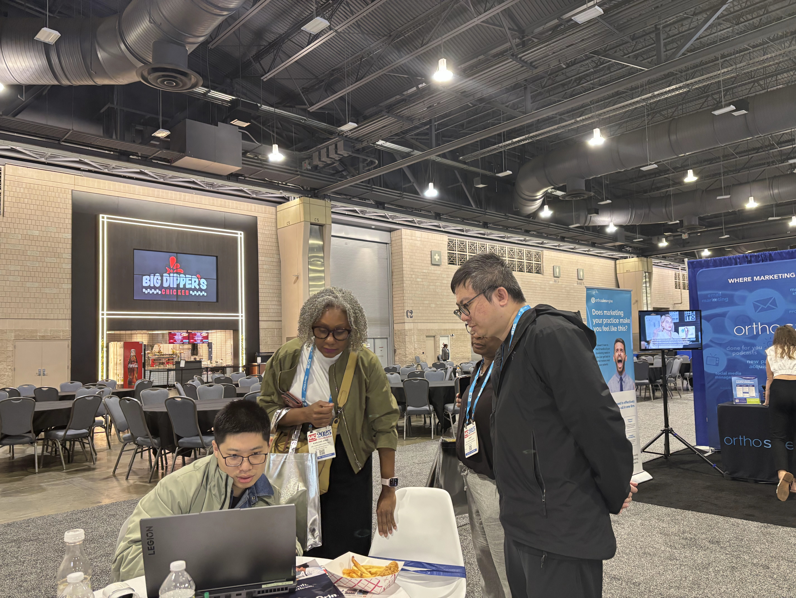
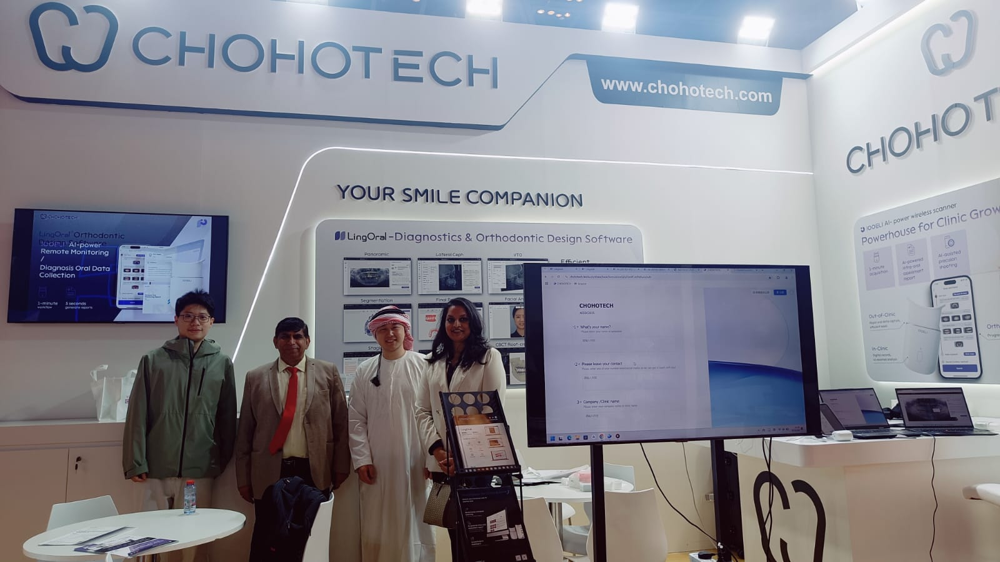
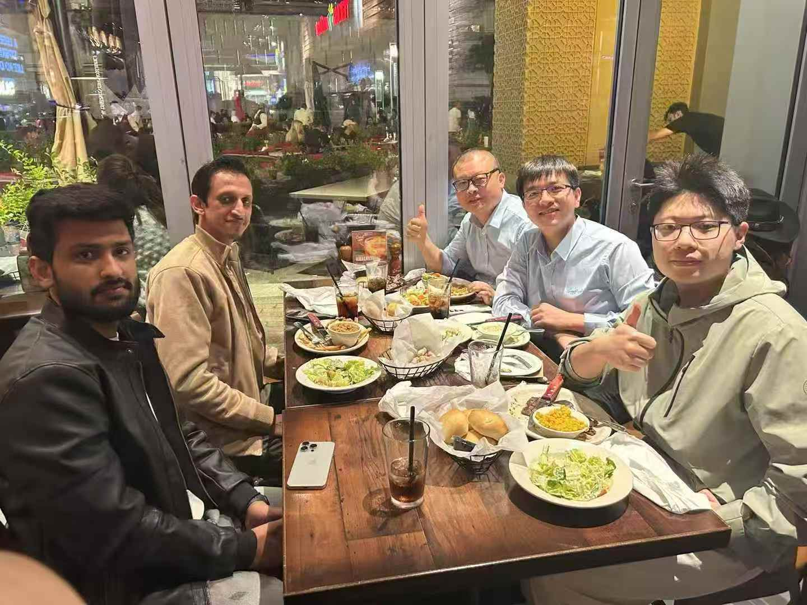
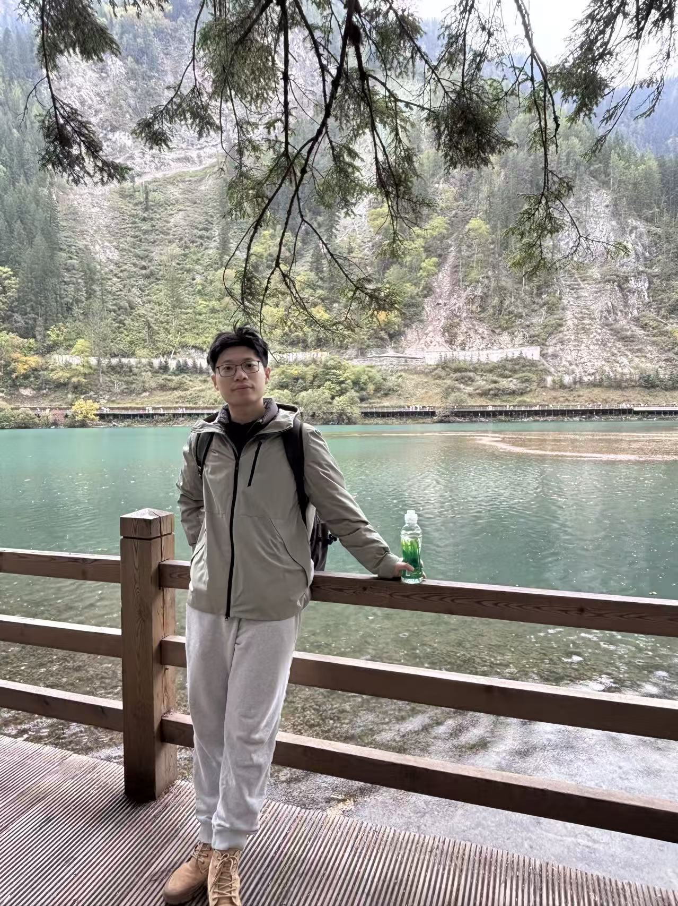

谢菲尔德大学
硕士信息管理与信息系统
我在杭州朝厚信息科技有限公司担任产品经理，带领 4 人产品团队负责 3D SaaS、大模型 Agent 与影像采集产品，并统筹医学数据标注与算法验证体系。此前有一年半 Web 前端开发经历，熟悉 Unity 3D、Three.js，能与研发对齐数据格式、工具接口与评估标准。
我擅长与医学专家一起，把口头经验拆成可标注的字段、可配置的规则和可复现的判定标准；当专家评分口径不一致时，组织二次确认。在自动评分验证中，根据与医师评分的一致性划定适用维度，让每一项自动化都有证据支撑。
也使用 Cursor、Claude Code、Codex 独立完成从 UI、代码到 Agent 搭建的 MVP 验证，让产品想法尽早进入可测试的状态。
在海外展会与客户交流中，使用英语介绍产品功能、演示业务流程，并围绕实际使用场景与合作需求沟通。让产品说明、现场答疑与后续交流顺畅衔接。

围绕产品流程和使用问题，与海外客户面对面交流。

在展台介绍产品，与海外客户建立联系。

与海外客户和团队相聚，让现场沟通自然延续。
* 图示参考公开产品资料重新绘制，为概念示意。
从“做了什么”，到“如何思考”。
需求定义、规则建模与团队协作，业务范围 → 团队投入 → 结构诊断 → 优化机制
PDF 支持逐页在线阅读与原文件下载；脑图提供可展开的网页视图与 XMind 源文件。

信息管理与信息系统
电子商务及法律
工作之外，我喜欢旅游、足球和桌游。去不同的地方看看，投入一场有悬念的比赛，或和朋友围坐在桌前，都是我享受生活的方式。
旅行带来新的见闻，足球带来热情，桌游则让相聚多一些策略与互动。如果你也有同样的兴趣，很乐意交换旅行见闻、聊场球，或一起开一局。
喜欢走出熟悉的环境，看看不同地方的风景与日常。在行程之外，也给偶然的发现留一点空间。
喜欢比赛的节奏、团队之间的配合，以及不到最后一刻仍有可能改变的结果。也愿意和同样热爱足球的人聊聊场上的选择。
享受围桌而坐的氛围，也喜欢理解规则、讨论策略和朋友互动的过程。一局游戏，就是一段专注又轻松的相处时光。
AI 数据产品 / 算法评测 / 大模型 Agent
19557106057（微信同号） · 现居杭州